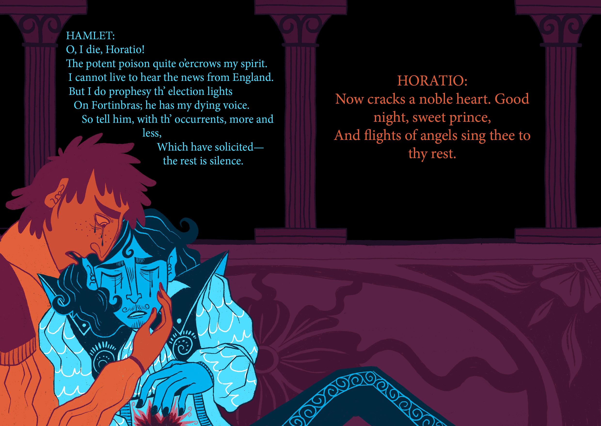
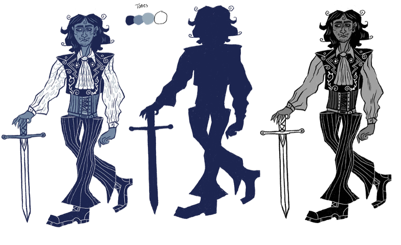
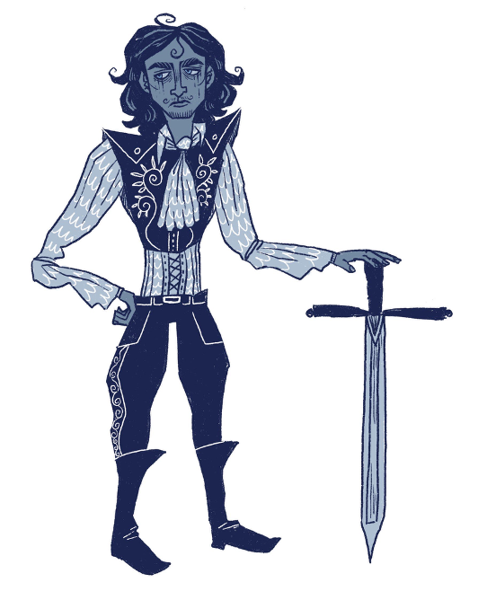
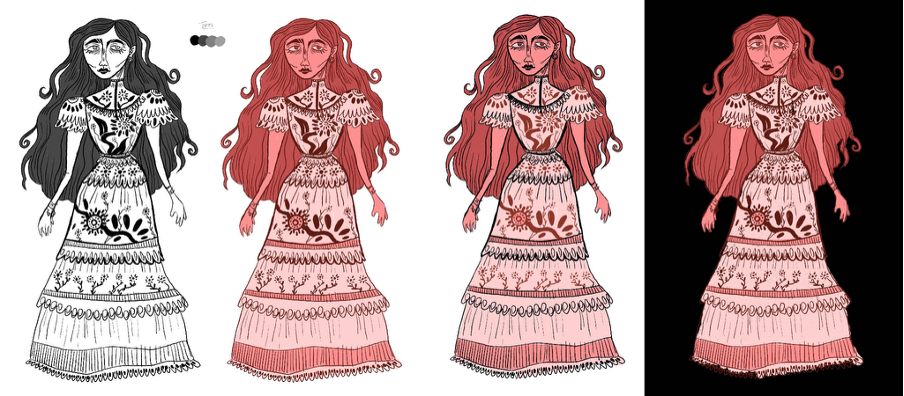
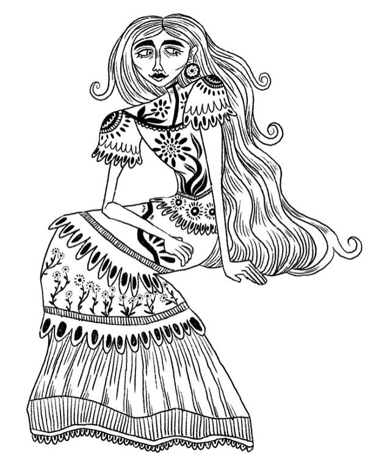
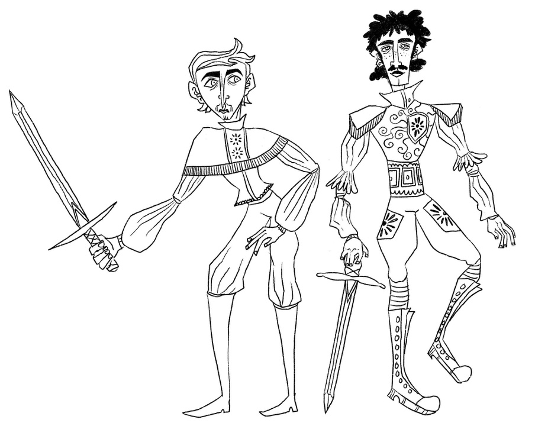
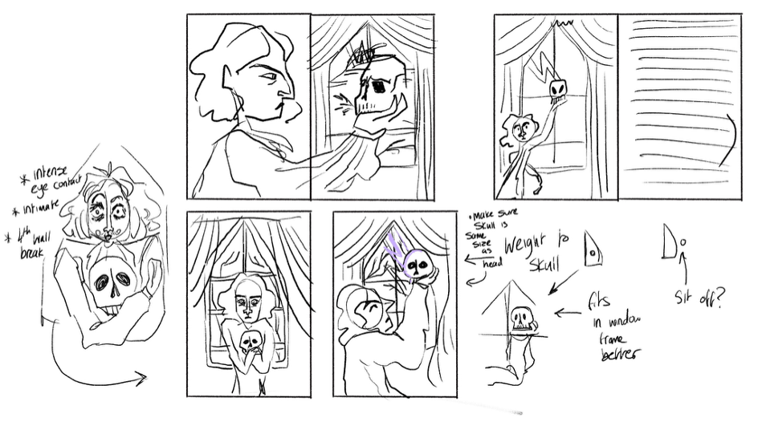

This is the front cover for my Hamlet project. I purposefully made this cover feel claustrophobic and drew the exterior of Elsinore castle with a doll-house like composition, with all of the characters' silhouettes in the windows. Hamlet is tightly positioned in the middle as the corruption inside the castle closes in on him.
"The First Soliloquy" - Hamlet mourns the loss of his father inside Elsinore Castle. I wanted to give this scene a sense of drama by picturing Hamlet to appear like a ragdoll as he hugs a portrait of his father on the wall.
0
"The Skull of Yorick" - My take on one of the most well-known scenes from the play, which is when Hamlet discovers the skull of the court jester, Yorick, and contemplates the inevitability of death. I wanted this illustration to have a macabre, almost 'halloweeny' feel to it to reference the theme of death in this scene.
"Ophelia's death" - Ophelia meets her demise as she drowns by falling into a brook outside of the castle, accompanied by the text that poetically describes the way her body was found. I stayed true to the text and wanted Ophelia to look almost mermaid-like as her hair floats around her in the water. I was inspired by John Everett Millais' oil painting of the depiction of her death from 1852.
"The Bedroom Confrontation" - An illustration of Hamlet and Gertrude's confrontation. This illustration also communicates the moments before Polonius' death.
"The Ghost Encounter" - Hamlet encounters the purgatory spirit of his deceased father, who cannot rest without Hamlet avenging his death. I wanted this piece to display the supernatural power of the ghost, with his silhouette dominating the page as he beckons Hamlet to unveil the secrets of his death.

"Swear by my sword" - The Ghost of Hamlet's father urges him to avenge his murder. Hamlet then orders his trusted friends, Horatio and Marcellus, to make a promise upon his sword to never speak of the encounter. I wanted to draw a magical mist flowing from the sword to display a sense of spiritual power surrounding the promise
Development
My love for narrative in every form it takes inspired me to create this project. I studied numerous topics such as costume design and set design, and analysed each of the major characters to aid me in visualising how they may look, act and interact with each other. This was a very enjoyable challenge to explore through still illustrations. I took into consideration how colours and shapes may communicate the characters' personalities and temperaments too.
The composition of my final outcomes were a key part of this project too. I spent a lot of time analysing how every component fits together to make sure there was a consistent harmony throughout every illustration of this project.
Below are a few examples of the character designs and composition sketches I made to help me develop my final outcomes.





